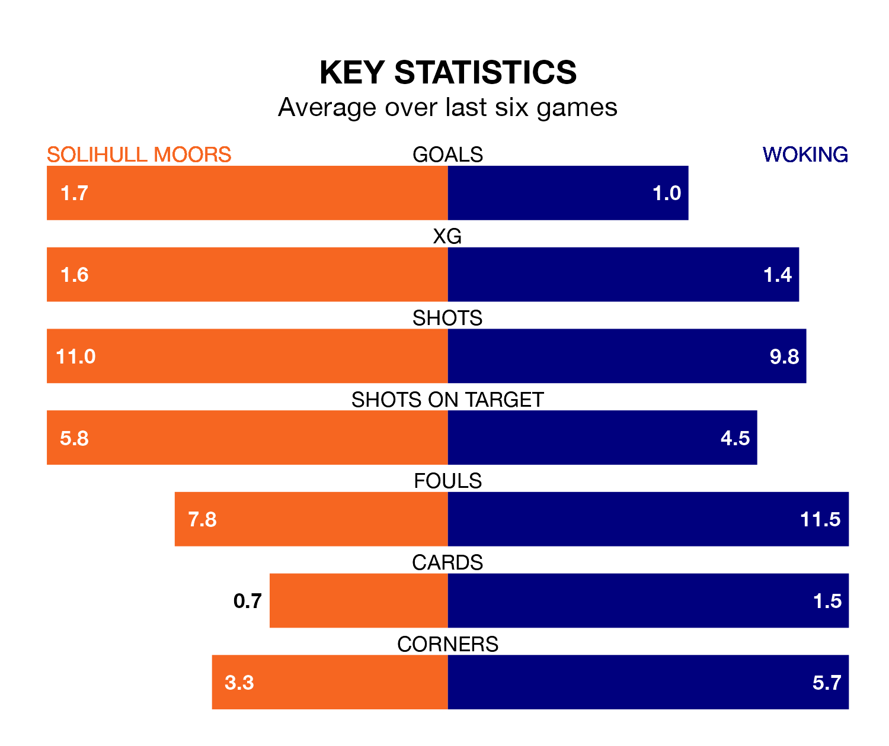

Solihull Moors host Woking in Saturday's match at the ARMCO Arena looking to bounce back from defeat last time out in National League.
The Moors, who sit fourth in the league after 26 games, fell to a 3-2 away defeat to Chesterfield on Monday.
They face a Woking side who also lost their last match, a 3-2 defeat to Aldershot Town, and who sit 20th in the table.
With 28 goals in 26 games so far this season, Woking are the league's joint-third-lowest scorers with 1.1 goals per game. But they are conceding fewer than average too, letting in 34 goals at a rate of 1.3 per game.
Solihull Moors, meanwhile, are average scorers, with 1.5 goals per game. They have conceded 1.4 goals per game.
The Moors are in disappointing form in National League, with two wins and four losses from their last six games.
With a win and two draws over that period, the Cardinals's form is slightly worse – they have taken five points from 18, compared to the hosts' six.
In the last five years, Solihull Moors and Woking have played each other on eight occasions. Solihull Moors won three of them, Woking four, and they drew once.
On average, the Moors scored 1.1 goals and the Cardinals 1.4 in those matches.
Their last meeting was on September 9, when they played out a 1-1 draw.
Updated: 12:57, 02/01/24